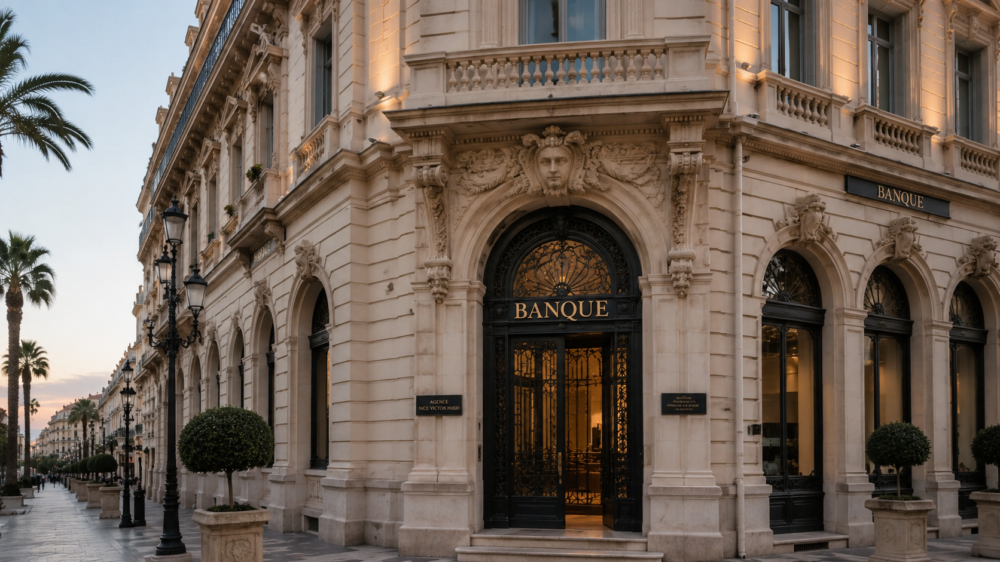

Notre expertise
Financement de vos projets
Structurer, sécuriser et optimiser le financement de vos projets immobiliers, patrimoniaux et professionnels.
Banque · Garanties · Investissement
Un accompagnement juridique à chaque étape du financement
Le financement constitue souvent le point de départ d’un projet immobilier, professionnel ou patrimonial. L’office vous accompagne dans la sécurisation des actes, la mise en place des garanties et l’analyse juridique des engagements pris auprès des établissements prêteurs.
Particuliers
Financement immobilier des particuliers
L’acquisition d’un bien immobilier constitue souvent l’un des projets les plus importants d’une vie. Le financement doit être compris, sécurisé et parfaitement adapté à votre situation.
L’office vous accompagne dans l’analyse des actes et la sécurisation de votre projet immobilier.
- Résidence principale
- Résidence secondaire
- Investissement locatif
- Prêt relais
- Acquisition en SCI
- Financement patrimonial
Sécurisation bancaire
Garanties bancaires et hypothèques
La mise en place d’un financement nécessite fréquemment la constitution de garanties au profit de l’établissement prêteur.
Notre office assure la rédaction, la réception et la publication des actes nécessaires à la sécurisation des intérêts de chacune des parties.
- Hypothèque conventionnelle
- Mainlevée d’hypothèque
- Refinancement
- Garanties réelles
- Sûretés immobilières
- Analyse des engagements

Immobilier professionnel
Financement immobilier professionnel
Les opérations immobilières professionnelles supposent une parfaite coordination entre les enjeux juridiques, fiscaux, bancaires et opérationnels.
Nous accompagnons les professionnels et investisseurs dans la sécurisation de leurs financements et de leurs garanties.
- Bureaux
- Locaux commerciaux
- Entrepôts et locaux d’activité
- Immeubles de rapport
- Opérations de promotion immobilière
- Investissements professionnels
Entreprise
Crédit professionnel et développement de l’entreprise
Le financement constitue un levier essentiel du développement de l’entreprise. Il doit s’inscrire dans une stratégie globale et sécurisée.
L’office intervient aux côtés des dirigeants afin d’anticiper les conséquences juridiques et patrimoniales des financements professionnels.
- Acquisitions stratégiques
- Croissance externe
- Rachats de sociétés
- Restructurations
- Investissements professionnels
- Garanties bancaires
Patrimoine & investissement
Financement patrimonial et investissement
Le financement doit être pensé comme un élément de votre stratégie patrimoniale globale, notamment lorsqu’il concerne un investissement immobilier ou une structuration familiale.
Nous vous conseillons afin d’assurer la cohérence entre financement, détention, fiscalité et transmission future.
- Acquisitions patrimoniales
- Investissements locatifs
- Opérations via SCI
- Holdings familiales
- Optimisation de la transmission future
- Coordination avec vos conseils
Notre approche
Un financement bien structuré constitue souvent la première étape d’un projet réussi.
Grâce à une collaboration étroite avec les établissements bancaires, les professionnels du financement et les conseils spécialisés, notre office vous accompagne afin de sécuriser chaque étape de votre projet.
Prendre rendez-vous